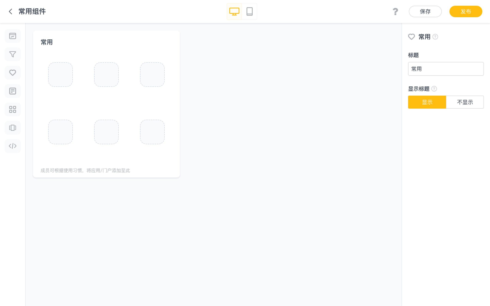
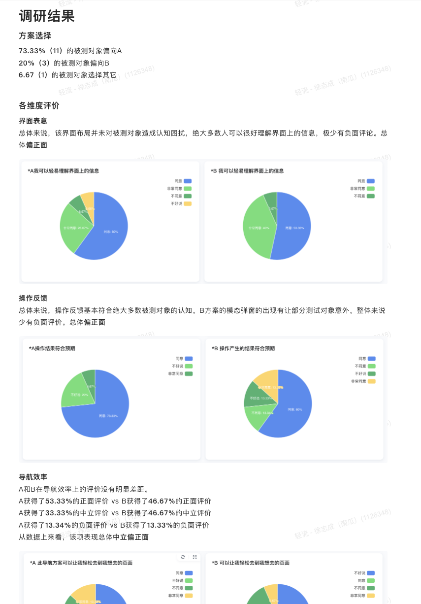
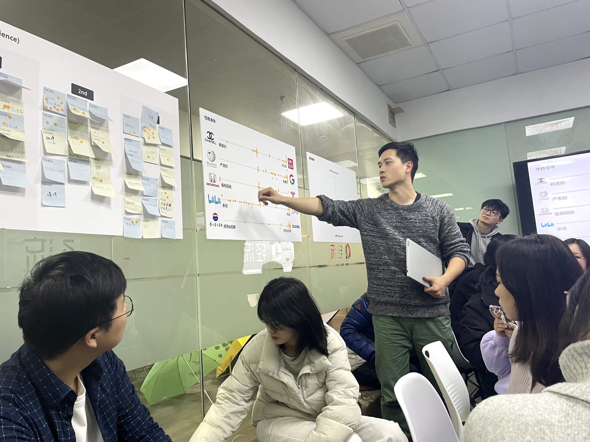
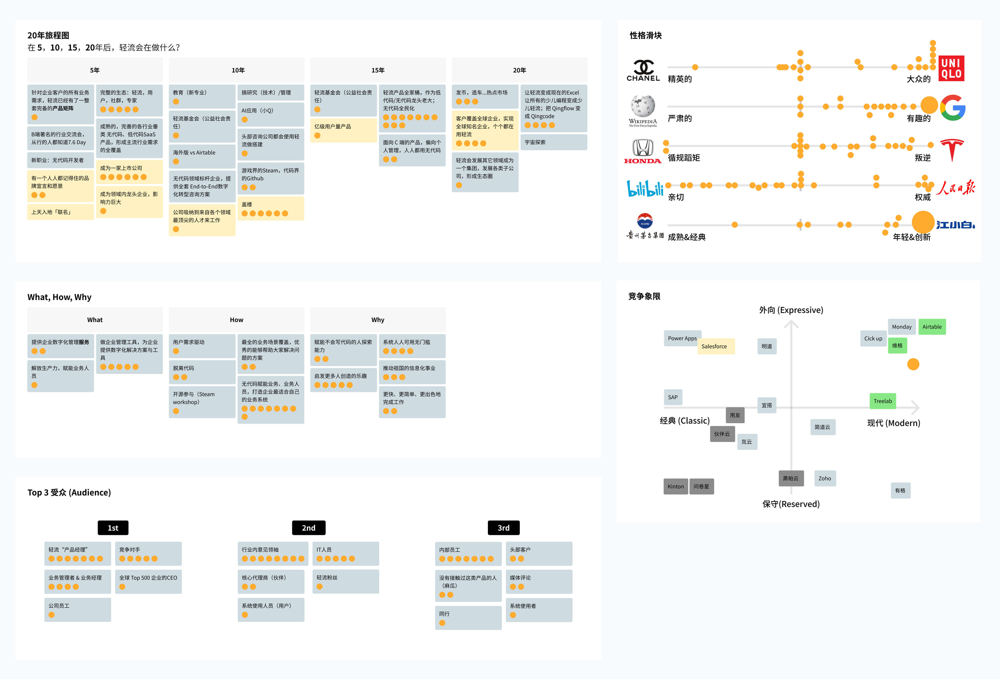

轻流
为中国领先的无代码平台设计
轻流是一个表单与流程驱动的无代码搭建平台，旨在帮助没有技术背景的业务人员轻松搭建业务系统。为这样一个帮助人们完成工作的工具做设计给我带来了很大的满足感。这里是一支我为轻流制作的产品宣传视频，可以帮助你对这个产品有一个概括印象。
我在轻流担任高级体验设计师。我的工作内容几乎涵盖了设计的方方面，包括定性研究，原型设计，界面设计，可用性测试，体验度量与设计项目管理，还包括了公司品牌价值观的探索等。
在创业公司的多元工作内容充满了挑战和乐趣，我想在这里分享一些这段经历中的重要时刻。
门户引擎
从 0 到 1，打造驱动业务的全新功能引擎
一个完整的业务系统，不仅要有完善的数据管理与流程管理，还需要考虑到如何让终端用户方便使用。「门户」便承担了这个定位如何满足各类信息整合场景，作为业务的统一入口，串联相关的业务流程。
内部信息分发渠道杂乱，重点业务信息未能集中展示
随着客户对平台使用程度的加深，内部信息的有效聚合成为越来越多的客户提起的需求。对此，我们访谈了多位不同行业的客户，最终发现「业务的统一入口」是一个非常共性的需求，并且它的使用场景比我们预计的还要广泛。
一个页面串联所有
我们对「门户引擎」的设想，是通过无代码的方式，将应用、报表、待办等常用模块集成为一个门户页面，作为企业或个人处理业务的统一入口。它既可以作为业务系统的首页，也可以作为频繁访问的常用页面，也可以对外分发作为供外部人员使用的页面，并结合权限体系，实现「千人千面」的效果。
设计目标聚焦
以我们的设想为依据，我们提出了如下的设计目标： 操作简单，布局灵活，场景通用，千人千面 为此我和团队进行了许多信息收集，用户访谈与竞品调研的工作。在竞品调研中，我并没有仅仅把目光放在直接竞品，而是选择了功能形态上更为相近的无代码建站工具，诸如 Wix, Strikingly, Webflow 等，这些工具给我提供了非常多的灵感。
挑战：抽象出最通用的搭建组件
我们需要选择对于门户来说必不可少的页面元素，并把这些元素与其代表的功能抽象成搭建组件。在有限的资源下，我们需要选择那些最必要的组件。通过调研与走访，我们最终选择了宫格组件，轮播组件，链接组件，报表组件，筛选组件与文本组件作为第一批实装的组件。
挑战：设计直观与复杂兼顾的界面布局
要想实现千人千面，门户的配置则必须要丰富，丰富则会带来一定的复杂性，而我们希望在功能的丰富同时，也保证界面的简洁与直观。我和设计师 @周凌超 一起探索方案，最终得到了兼顾配置组件与主题样式与功能的门户配置布局。
挑战：制定兼顾普适与灵活的栅格系统
我们允许用户自由调整组件的位置与大小，而浏览器的视窗大小也可以被自由调整，这就意味着门户的组件会在各种尺寸下呈现，我必须考虑到每一种复杂布局下的组件显示效果，为此，我需要制定一个兼顾普适与灵活的栅格系统，以满足各个组件在不同的尺寸下的显示效果。

其中，宫格组件与待办组件这类形态多变的组件尤其复杂，需要考虑在不同的尺寸下的显示效果。我和设计师 @周凌超 为此定下了详细的适配规则，保证组件在各种宽度下都有合理的显示效果。
被用户的创造力惊叹
功能上线至今，「门户」已成为使用率名列前茅的重要板块，也是产品的重要卖点。我们也常常被客户使用门户搭建的一些优秀案例而惊叹。
不论是从使用率还是从用户的搭建结果来看，「门户引擎」基本满足了我们最初的设想：一个页面，串联所有。
轻流 4.0 改版
灵活，效率与美观
作为一款成熟的无代码产品，轻流当下的产品设计虽然久经考验，但却已经无法面向未来。我作为轻流4.0大改版的主设计师，参与定义了轻流的下一个阶段的设计形态。
为什么需要改变
轻流积攒了不少来自业务侧和用户的真实反馈，需要一个契机将这些积攒的问题一并进行优化。经过与一系列的内部商讨与用户研究，结合产品愿景和用户愿景，我们概括出如下三个改版方向：
1.更合理的空间布局
旧版界面有界面空间浪费的问题，影响了信息呈现的效率。
2.数据功能升级
作为一款aPaaS产品，轻流十分重视产品的灵活性，其中就包括数据功能的灵活展示与使用。在未来规划中，我们想要赋予用户一定的数据展示界面自定义能力。
3.交互与视觉优化
在产品的早期设计过程中，并没有对诸如交互模式、视觉风格、icon规范等做全局考量，导致当下产品在交互和视觉上缺乏一致性。
我尝试用三个词概括本次的改版目标：「灵活」、「效率」、「美观」
在改版的过程中，我会时刻思考每一个设计决策是否契合关键词。
从最高频使用的功能入手：主导航
我们决定从被用户频繁使用的界面入手，对高频使用的界面进行改动虽然激进，但可以收获最大的改版效果。对轻流这款较为复杂的产品来说，在不同的界面中频繁跳转是用户的日常。而主导航作为产品的「主要路标」，它对于帮助用户便捷使用产品的重要性再多强调也不为过。
我从「灵活」、「效率」、「美观」这三个改版视角，重新审视了我们当下的导航系统。
灵活：我们一直在探索如何最大限度提升轻流的灵活性。在我们的产品规划中，我们希望将设计主导航内容的权利交给用户，而我们当下的导航方案并没有留下可拓展的自定义空间。
效率：当下的导航设计在操作效率和信息展示效率上都不尽人如意。不同的导航内容被分散在不同的位置上，这给操作带来了不便，也不利于用户直观理解页面的布局安排。顶部导航占用位置也过大，挤占了纵向空间，让信息展示效率打了折扣。
美观：虽然轻流是一款B端产品，但我们对视觉体验十分重视。导航的陈旧设计，不规范的 Icon 使用等等，都是亟待解决的视觉问题。
方案探索
在方案设计阶段，在确定大方向的前提下，我尝试了多种小方向，并持续进行用户访谈，对我们的探索方向给予修正。
以主导航的改版为例，在决定把所有导航类目集中在左侧后，我就打开应用包列表展开了多个方向的探索，产出了多种设计方案，其中不乏较为挑战用户习惯的尝试。因为此次界面的布局改动较大，影响的范围较广，我们每一个设计决策都十分谨慎。我与产品经理一起合作开展了可用性测试，用户访谈，问卷等多种调研手段。
原型测试邀请
我们与多位用户进行一对一的原型测试，将每一个方案都交由用户自己操作，我们通过观察和简单的提问，确认界面上的信息是否准确无误传达给用户，用户是否遇到操作上的障碍等等。
方案尝试与探索（部分）
早期的交互原型之一，我们使用它和真实的用户进行交流
调研结果记录（部分）
调研结果记录（部分）
最终呈现
更直观，更高效
新版导航栏新增了全局导航属性，常驻在左侧，我们还特地为高频的应用包切换操作增添了快捷操作，提供了更加专注且高效的办公体验。
更优的屏效
在原先的界面布局中，侧边导航与应用列表都占了较大的显示面积。此次改版中，我们将所有导航内容都聚集在左侧，省下了原先的顶部空间。此外我们还特别设计了展开和收起两种状态，用户可以根据自己的需要灵活选择。
更美观
我们为每一个导航类目重绘了图标，调整了间距节奏，达成了视觉上的美观与和谐。
新版主导航
我们设计了主导航自定义功能，用户可自由定义呈现的内容多少
方案上线
B端产品一向求「稳」，改变用户的习惯是一件冒险之举。因此，在全新的主导航上线后，我们依然提供了旧版导航的入口，这样做的好处主要有两点：
1.平滑迁移
为用户预留充足的适应时间，不冒然向用户推出一个全新的陌生界面，同时也为我们提供了一个打磨方案的窗口期。
2.数据验证
新旧版本并存，实际上是给予了用户「用脚投票」的机会。从用户的选择之中，我们就可以知晓本次的改版是否成功。
令我们欣喜的是，在新的界面上线后，绝大部分用户最终都选择了新的界面。随着时间的推移，我们已经完全下线了旧版设计，用户已经完全接受我们的新方案了。
优化信息展示效率
在原先的界面中，有一些信息展示效率的问题被人诟病，我们需要思考是否有更加合理的布局呈现方式。在设计改版过程中，我们持续有多位用户进行访谈，了解他们对页面布局的看法。优化后的界面布局让数据的有效显示区域有了显著的提升。
全新的视图功能
在优化需求之外，轻流旧版界面已无法承载那些我们迫不及待想要与大家分享的新功能。 在4.0版本中，我们计划对数据引擎进行了大改造。为了丰富用户查看、使用数据的方式，我们让数据引擎支持展示用户自由配置的多种视图，丰富页面的自定义拓展性。
丰富的视图类型
我设计了轻流的表格视图，卡片视图，看板视图和甘特视图。这些不同的视图丰富了数据的展示方式，适用于不同的场景，大大丰富了轻流的系统搭建能力。每个视图的交互和展示方式都各不相同，探索交互的过程对我来说是一个非常有趣的过程
我们将全部视图收纳在抽屉之中，也允许用户将高频使用的视图以页签的形式固定在顶部，并且可以自由决定展示顺序，这样用户就拥有了灵活自定义数据引擎页面的能力。
灵活的配置项
设计视图的一个难点是各个不同视图的配置项。如何将表单字段数据映射成迥异的数据展示形态？各个不同的视图配置使用了丰富的交互组件。
逐步实现愿景
轻流 4.0 作为一段时间以来产品形态最大的改变，在「灵活」、「效率」、「美观」这三个维度都获得了长足的进步。 不论是界面布局的优化，还是视图功能的上线，都获得了很好的反响，对业务的驱动效果显著。作为主设计师参加这样一个大的设计改版项目，虽然面临了诸多挑战，但收获也颇丰。
团队文化建设
定义公司价值观
设计师的影响力远远不仅仅只体现在设计方案之中。在方案之外，我还参与定义了公司价值观。
对许多设计师来说，品牌仅仅意味着一套视觉体系，但品牌的含义远不止于此。在我加入轻流时，公司还未系统梳理整理过自己的品牌价值观，我借此机会组织了一次跨部门的品牌冲刺 Workshop, 与公司几乎所有部门的代表一起，共同提炼出得到大家共识的品牌价值观。
我在主持 Workshop
大家积极参与活动
每个人都会发表自己对品牌的看法
将产出做总结并电子化存档
以上是我在轻流的设计故事，这是一段在有爱的团队成长非常快的时光。更多有趣的经历与细节无法在此展开，但我愿意随时与你分享，感谢你阅读到这里。：）